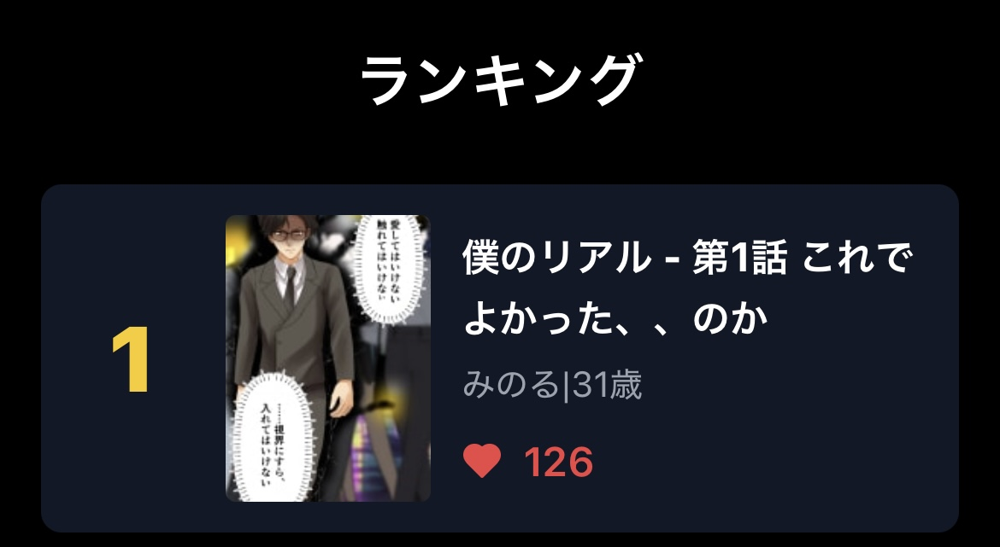

面白ければ、
バズる。
無料で投稿をはじめる →
フォロワー151人の
クリエイターの実績
22,560
PV獲得
1位
ランキング
フォロワー0のクリエイターが1投稿でランキング1位を獲得

なぜフォロワーが少なくても
バズれるのか
1
投稿する
フォロワー数に関係なく必ず作品おすすめに乗ります
↓
2
評価が良ければ
フォロワー数に関係なくさらに多くのユーザーにおすすめ表示
↓
3
さらに高評価なら
バイラル拡散。100万PVも夢じゃない
つまり面白ければ、
バズる。
他のプラットフォームと
比べてみました
A
B
SnapToon
フォロワー0
での露出
ほぼなし
ほぼなし
全作品おすすめ表示
✓
収益化
条件が厳しい
限定的
広告収益＋投げ銭
✓
ライセンス
自分のもの
出版社に帰属
自分のもの
✓
AI作品
商業化不可
掲載不可
全面OK
✓
※SnapToonの収益化は現在準備中であり将来的な機能です
投稿は、30秒で完結。
✏️
＋ボタンをタップして投稿するものを選ぶだけ
📱
PC・スマホ、どちらからでも投稿できます
投稿規定を確認する
▼
対応形式
画像形式：JPEG・PNG
推奨値：高さ800 × 幅1,147px
最大サイズ：幅1,600px × 高さ10,000px
1話あたりの最大枚数：100枚
1話あたりの最大合計容量：200MB
推奨事項
重要なコンテンツを右端から約10%以内に置かないことを推奨（UI上のボタンと重なる可能性があります）
大きいサイズで制作し、書き出し時に800pxに縮小することを推奨
面白ければ、
バズる。
30秒で完了
今すぐ無料で投稿する →